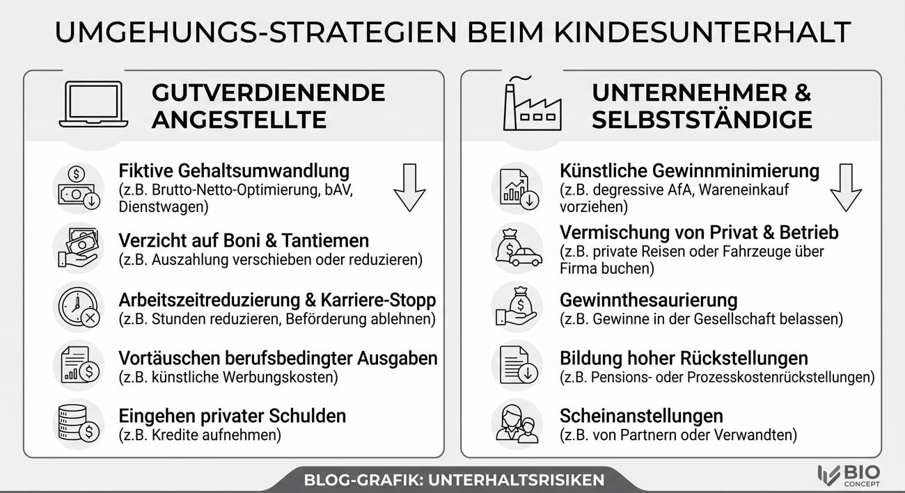

Symbolbild zu Umgehungsstrategien beim Kindesunterhalt. Quelle: BioConcept.
Unterhaltsvorschuss vor dem Aus. Familienministerin kürzt, wo es richtig wehtut
Ab 2027 soll der Unterhaltsvorschuss für Kinder ab 16 Jahren komplett wegfallen - Kritiker aus SPD, Grünen und Sozialverbänden sprechen von einem Kahlschlag bei Alleinerziehenden und ihren Kindern.
Rund 855.000 Kinder in Deutschland lebten 2025 vom Unterhaltsvorschuss - jener staatlichen Leistung, die einspringt, wenn der unterhaltspflichtige Elternteil nicht zahlt. Bundesfamilienministerin Karin Prien (CDU) will diese Leistung nun kappen: Statt wie bisher bis zur Volljährigkeit soll der Vorschuss künftig nur noch bis zum 16. Geburtstag gezahlt werden. Betroffen wären nach aktuellem Stand rund 80.000 Kinder im Alter von 16 und 17 Jahren.
1 Was genau plant die Ministerin?
- Altersgrenze: Der Unterhaltsvorschuss soll nur noch bis zum 16. Geburtstag gezahlt werden - bislang gilt er bis zum 18. Geburtstag, ohne zeitliche Höchstgrenze. (buerger-geld.org)
- Zeitplan: Inkrafttreten ist für 2027 vorgesehen. Ein Kabinettsbeschluss und das parlamentarische Verfahren stehen noch aus - die Pläne sind also noch nicht in trockenen Tüchern.
- Zusätzlich im Gespräch: schärferer Druck auf säumige Elternteile, etwa über Fahrverbote im Verwaltungsverfahren.
2 Die Zahlen dahinter
- 3,2 Milliarden Euro gab der Staat 2024 für den Unterhaltsvorschuss aus.
- Nur rund 545 Millionen Euro - etwa 17 Prozent - holte er sich davon von den säumigen Elternteilen zurück. (buerger-geld.org)
- Vervierfacht haben sich die Ausgaben seit der Reform 2017, als die damalige Familienministerin Manuela Schwesig (SPD) die Altersgrenze von 12 auf 18 Jahre anhob und die Bezugsdauer entfristete.
3 So begründet Prien die Kürzung
Die Ministerin verweist vor allem auf die niedrige Rückholquote und die Zahlungsmoral der Unterhaltspflichtigen:
- "Es kann doch nicht sein, dass in Deutschland sich 80 bis 85 Prozent der betroffenen Väter einen schlanken Fuß machen." (t-online)
- "Deswegen kann ich den Skandal tatsächlich nicht erkennen." (t-online)
Kurz gesagt: Weil der Staat sich das Geld von den Vätern kaum zurückholt, soll es künftig einfach nicht mehr fließen - nicht an die säumigen Väter, sondern an die Kinder, die ohnehin schon ohne den unterhaltspflichtigen Elternteil auskommen müssen.
4 Kritik - quer durch fast alle Lager
- Manuela Schwesig (SPD, Ministerpräsidentin Mecklenburg-Vorpommern, Architektin der 2017er-Reform): Die Kürzung bestrafe Alleinerziehende und deren Kinder - "das ist falsch". (t-online)
- Franziska Brantner (Grüne): nennt die Pläne "eine Schweinerei". (ZDF)
- Deutscher Kinderschutzbund (Daniel Grein): Die Kürzung "verschärft Kinderarmut, statt sie zu bekämpfen". (ZDF)
- Verband alleinerziehender Mütter und Väter (VAMV): Ausgerechnet bei Kindern mit dem höchsten Armutsrisiko zu sparen sei "vollkommen inakzeptabel". (ZDF)
- Jasmina Hostert (SPD): schlägt als Alternative härtere Konsequenzen für Nichtzahler vor - etwa Schufa-Einträge oder Stadionverbote - statt bei den Kindern zu kürzen. (ZDF)
5 Kommentar
Dass die Rückholquote beim Unterhaltsvorschuss miserabel ist, stimmt. Dass viel zu viele Unterhaltspflichtige sich vor ihrer Verantwortung drücken, stimmt auch - wie die Grafik oben zeigt, gibt es dafür ein ganzes Repertoire an Tricks, von der fiktiven Gehaltsumwandlung bis zur Scheinanstellung bei Verwandten. Nur: Die Antwort darauf ist nicht, den Kindern von 16- und 17-Jährigen das Geld zu streichen. Die Antwort wäre, endlich konsequent bei denjenigen einzutreiben, die zahlen könnten und nicht wollen.
Stattdessen soll ausgerechnet dort gespart werden, wo Kinder - nicht die säumigen Elternteile - die Rechnung zahlen. Das ist kein Sparen an der richtigen Stelle. Das ist Sparen an der bequemsten.